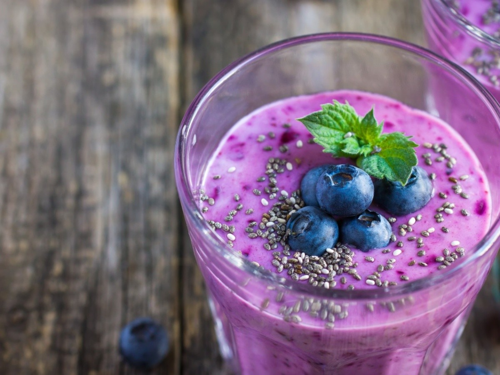

Nuestros Batidos

Batido de Piña
Batido de Piña

Receta:
- Ingredientes: Piña, leche de coco, azúcar, hielo.
- Preparación: Mezcla todos los ingredientes hasta obtener una mezcla suave y cremosa.
¡Un toque tropical con piña y leche de coco!
Video de Preparación:
Batido de Durazno
Batido de Durazno
Receta:
- Ingredientes: Durazno, yogurt, miel, hielo.
- Preparación: Licúa todos los ingredientes hasta que quede suave.
¡Un batido refrescante con un toque dulce!
Video de Preparación:

Batido de Uva
Batido de Uva
Receta:
- Ingredientes: Uvas, leche, azúcar, hielo.
- Preparación: Licúa todos los ingredientes hasta que la mezcla sea suave.
¡El sabor de la uva fresca en cada sorbo!
Video de Preparación:
Batidos Especiales
Batido de Mango
Batido de Mango
Receta:
- Ingredientes: Mango, leche, azúcar, hielo.
- Preparación: Licúa todos los ingredientes hasta obtener una mezcla suave y cremosa.
¡Un batido tropical con el sabor intenso del mango!
Video de Preparación:
Batido de Fresa
Batido de Fresa
Receta:
- Ingredientes: Fresas, yogurt natural, miel, hielo.
- Preparación: Licúa todos los ingredientes hasta obtener una textura cremosa y suave.
¡Un batido delicioso con el sabor dulce de las fresas!
Video de Preparación:
Batido de Plátano
Batido de Plátano
Receta:
- Ingredientes: Plátano, leche, avena, miel.
- Preparación: Licúa todos los ingredientes hasta obtener una mezcla suave y cremosa.
¡Un batido lleno de energía con el sabor suave del plátano!
Video de Preparación:
Batidos Refrescantes

Batido Verde Detox
Batido Verde Detox

Receta:
- Ingredientes: Espinaca, pepino, manzana verde, limón, jengibre, agua de coco.
- Preparación: Licúa todos los ingredientes hasta obtener una textura suave y refrescante.
¡Un batido verde lleno de antioxidantes para purificar tu cuerpo!
Video de Preparación:
Batido de Piña y Coco
Batido de Piña y Coco

Receta:
- Ingredientes: Piña, leche de coco, hielo, azúcar o miel al gusto.
- Preparación: Licúa todos los ingredientes hasta que quede suave y cremoso.
¡Un batido tropical que combina la dulzura de la piña con la cremosidad del coco!
Video de Preparación:

Batido de Acelga y Manzana
Batido de Acelga y Manzana
Receta:
- Ingredientes: Acelga, manzana verde, limón, agua o jugo natural.
- Preparación: Licúa todos los ingredientes hasta obtener un batido fresco y saludable.
¡Un batido lleno de fibra y vitaminas para mejorar tu digestión!
Video de Preparación:
Batidos Energéticos
Batido de Plátano y Mantequilla de Maní
Batido de Plátano y Mantequilla de Maní
Receta:
- Ingredientes: Plátano, mantequilla de maní, leche de almendras, miel o stevia.
- Preparación: Licúa todos los ingredientes hasta obtener un batido suave y cremoso.
¡Un batido lleno de energía para comenzar el día con fuerza!
Video de Preparación:
Batido de Mora y Chía
Batido de Mora y Chía

Receta:
- Ingredientes: Moras, semillas de chía, leche de almendras o yogurt natural, miel.
- Preparación: Licúa todos los ingredientes hasta obtener un batido espeso y lleno de antioxidantes.
¡Un batido antioxidante perfecto para fortalecer el sistema inmunológico!
Video de Preparación:
Batido de Fresas y Yogurt
Batido de Fresas y Yogurt

Receta:
- Ingredientes: Fresas, yogurt natural, miel o stevia, hielo.
- Preparación: Licúa todos los ingredientes hasta obtener una mezcla espesa y cremosa.
¡Un batido delicioso y cremoso para disfrutar en cualquier momento del día!